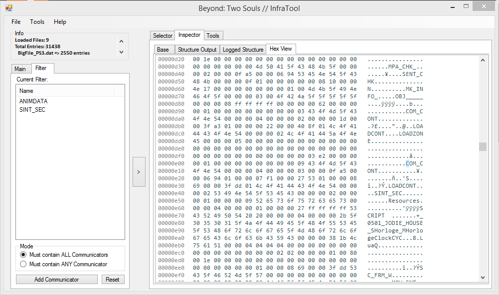
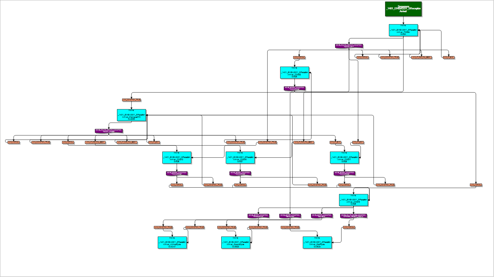

Reverse Engineering Beyond: Two Souls
| Software Used | Visual Studio, 010 Editor (hex viewer), a text editor and a calculator |
| Languages Used | C# |
Disclaimer: This project was entirely for educational purposes only. My intention was never to (nor will I ever) release any copyrighted assets. Please note that I'm leaving out a lot of information with the reason of being respectful to Quantic Dream and preventing others from copying my work.
Quantic Dream is aware of this project
After I played Beyond I felt like the game left quite an impact on me emotionally, I wanted to learn more about the game, its development, and how such a content-heavy technological marvel works under the hood. Given the game's dynamic and data-driven nature I felt like there was a lot to explore and learn.
This turned into a sort of obsession of overcoming each challenge that was put in front of me to understand how each system in the game's engine works. My main tools were Visual Studio and a Hex editor, and I would often use my debug PS3 to test hypotheses I had about how the game works internally. I would for instance stream the game over my local network to the PS3, and then unplug the network cable to see what was being streamed and what was buffered in advance (this is how I found out body and facial animation was separated).
Understanding the top-level structure
I opened some of the game's data files (that are on the disc) in a Hex viewer. There are really only a few large files on the disc prefixed "BigFile", so I assumed these contained some form of concatenated file entries. Most of these files use a form of proprietary compression using Zlib, but some smaller entries go uncompressed.
A typical entry within the game data looks like this:
The entry above begins at 0x800. These entries are unnamed, but seem to be sort of grouped based on their context, or date of creation by the developer.
At this point I made an extractor that scanned these files and extracted all the entries, but I didn't find out yet how the game would actually index all of these entries.
Indexing the BigFile entries
Each of the game's BigFile "groups" had their own <GroupName>.sdat file. After decrypting them, the header looks like this:
This data defines a table of groups of entries, each with their own type, an offset within the file where the entry definitions start and how many there are. One entry definition told me in which BigFile (within the group) it's located, the offset, size, and more. They look like this (one entry marked in red):
InfraTool
With these new findings I wrote a tool that would allow me to quickly look through all these entries: InfraTool!
I also implemented a Hex viewer inside this tool, immensely improving my workflow of inspecting different data types:

The Type/Id system
At this point I had no clue how these entries actually relate to each other, how the game knows what content to expect, etc.
Finding the "dynamic" Lua initialization functions
I performed a RAM dump on my PS3 to see if the game would do any post-loading modifications to the data, but instead of finding anything about that, I noticed Lua strings that seemed to initialize object-creation functions for many types.
I wrote a tool that searches for these types of strings, and from that output I wrote a tool to generate an enum of all the strings.
The end result has over 500 types, including:
VARIABLE_CONNECTOR_INSTANCE = 47, VARIABLE_CONNECTOR_CONTROLLER = 48, DATA_CONTAINER_PATCH = 49, VARIABLE_CONTAINER = 50, VARIABLE_CONNECTOR_BANK_INSTANCE = 51, LOD_GLOBALS = 53, TIMER = 1001, SOUND_OFFSET = 1009, SOUND_DATA = 1010, LOCALIZATION_CONTAINER = 1016, DEVICE_OBSERVER_CONFIG = 1020,
Connecting it all with the game data
I quickly realized these types map to many of the unknown values I had been seeing, as there seemed to be a lot of constants within the game's data. Taking the example from a game data entry from earlier:
The four red marked identifiers are all types that can be mapped back to the enum:
LOADING_ZONE = 2513 (0x869), SCENE = 4011 (0xFAB), AREA = 4000 (0xFA0),
The same concept applies to the .sdat files which index the top-level file entries.
Suddenly, I was able to get a lot better insight the types of content within the game, as each entry now had a readable type associated with it!
Lua engine binding & generated scripts
Lua is the game's main form of communicating with the game data. Quantic Dream uses a visual node graph editor to allow designers to quickly script gameplay behavior (and more), and from these graphs Lua code is generated and pre-compiled.
The pre-compilation causes the outputting bytecode to be incompatible with PCs, as PS3 is big-endian and Intel based processors little-endian. For this reason I was required to also develop a big- to little-endian converter for the Lua bytecode chunks.
This framework is very much event driven, with many custom functionalities to ease this process (MESSAGE_LAUNCHER & MESSAGE_DISPATCHER, Dynamic Communicators, Communicator Actions to name a few).
Note that pretty much all functions are custom to Quantic's engine (New, NewPlaced, NewOS), not to mention, each engine class has a ton of functions, with (to me) unknown parameters that I had to investigate individually.
I won't go into detail on how the Lua scripts reference the game data assets.
Navigating the game structure
Now I could find entries within the game data given the Type/Id values within other file entries, so I was able to extrapolate the hierarchy of the game data pretty easily.
I won't go into detail too much on how the game hierarchy works, but in short there's a single GAME_MANAGER entry within the data, that links to a STORYBOARD entry, that links to multiple scenes, which then reference scripts, audio, models, etc.
InfraViewer
The next step was a tool that would dynamically search each scene in the game data to create an understandable view of the structure so I could investigate the actual data of all this content. The Lua scripts play a big role in this, as they make the actual connections to the game data, and perform the logic for the game to run. By decompiling and scanning the scripts for these special types of references, I could construct a very consistent way of navigating scene structures:
Sequences, movies, and timelines
Sequences are what make up all of the game's realtime cinematics, where a movie is a single timeline of events (dialog, sounds, camera shots, animations, script events and more). The movies can link to each other, play in cycle, jump to another based on a dialog option, etc. All of the movies combined is the sequence.
If you'd take one sequence and put it in a flowgraph, it looks like this:

The green node is the start of the sequence, each blue node a movie, each purple node a different condition for jumping to another movie (script condition, coded condition, etc), and each orange node is a comparison to the condition.
Movies have their own script events, and they can delay a function call's finish events until the movie is finished.
The whole sequencing system is pretty much at the core of the engine, it took a lot of time to figure out all of the dependencies, and reading the data itself was also a pain because of the many different types of data it can handle.
Dissecting a sequence, I could make an overview of the different sequence elements:
For me to figure out how this all is structured, it involved a lot of trial and error on many different sequences, and about 5 rewrites of the sequence player...
I'll explain how a few of these elements work:
MOVIE_PLAY_DIALOG_ACTION
All dialog (and facial animation) within the game is done through this element. It links to audio data, localization (subtitles), target character, sets start / end times, and a lot more.
Dissecting it in the debugger of my implementation:
PLAY_SCRIPT_TOP
This allows script events to be executed while a movie is playing. It is mainly used to play music (that should continue after a movie has ended), FX actions, force a certain LOD level on characters, etc.
The action itself is quite simple, only providing a string of the event identifier. It is executed on multiple instances however. It executes on the calling instance of the sequence player, but also on SCRIPT_BANK's script of the movie and sequence. My implementation looks like this:
MovieCtx.Controller.SequencePlayController.Events["OnScriptTop"].Call(MovieCtx.Controller.InstanceContext, ScriptTopValue, 0, MovieCtx.Controller.SequencePlayController.LuaPtr); MovieCtx.Controller.Sequence.Events["OnScriptTopSequence"].Call(MovieCtx.Controller.InstanceContext, ScriptTopValue, 0); MovieCtx.Movie.Events["OnScriptTop"].Call(MovieCtx.Controller.InstanceContext, ScriptTopValue, 0);
User Action Conditions
Once I had sequences running I quickly started running into these timeline events. There are a few "interact-able" events, like MOVIE_DIALOG_GROUP_CONDITION and MOVIE_USER_ACTION_CONDITION.
MOVIE_DIALOG_GROUP_CONDITION is a group of dialog options that the player can choose from. The binary definition of this element looks like this when reversed:
public int ElementCRC; public int TypeStyle; public int DisplayStyle; public int AnimationType; public int AnimationConfusion; public float TextSizeFactor; public float _3DSizeFactorX; public float _3DSizeFactorY; public float _3DSizeFactorZ; public bool AnimationLookAt; public ComBinPtr DialogCharacter; public ComBinPtr DialogObject; public IntExtCom DialogAddress; public Vector3 DialogGlobalOffset; public Vector3 DialogLocalOffset; public string DialogOffsetBoneName; public int DialogViewportID; public bool ApplyTextSizeFactorToRadius; public bool ThoughtsDisplayData; // unused?? hr left over.. public float DIALOGS_1_rXStatic; public float DIALOGS_1_rXDiff; public float DIALOGS_1_rYStatic; public float DIALOGS_1_rYDiff; public float DIALOGS_1_rZStatic; public float DIALOGS_1_rZDiff; public bool DIALOGS_1_bUsePitch; public IntExtCom SPECIFIC_ADDRESSES_Address1; public IntExtCom SPECIFIC_ADDRESSES_Address2; public IntExtCom SPECIFIC_ADDRESSES_Address3; public IntExtCom SPECIFIC_ADDRESSES_Address4; public float DIALOGS_2D_OffsetX1; public float DIALOGS_2D_OffsetY1; public float DIALOGS_2D_OffsetScale1; public float DIALOGS_2D_OffsetX2; public float DIALOGS_2D_OffsetY2; public float DIALOGS_2D_OffsetScale2; public float DIALOGS_2D_OffsetX3; public float DIALOGS_2D_OffsetY3; public float DIALOGS_2D_OffsetScale3; public float DIALOGS_2D_OffsetX4; public float DIALOGS_2D_OffsetY4; public float DIALOGS_2D_OffsetScale4; public float DialogNoiseAmplificationFactor;
I was able to reconstruct the variable names pretty easily, because most of this data is actually defined in the SINT_SEC element (a collection of initialization parameters it seems), and the names match up:
Camera shots, keyframes, and effects
Beyond: Two Souls features very cinematic camera shots, and for this the data related to them is quite elaborate. Luckily for me, the options are named and categorized!
This made it quite easy to find the correct structure of parsing the properties:
All of the extra effects (smoothing, shake, etc) are applied at runtime.
Audio & Partition Streaming
There are two different methods of loading in audio
- Internal: Mainly for short audio such as footsteps and other effects.
- Streamed: For anything longer than a few seconds, such as music, ambiance, dialog.
Audio was one of the first things I figured out, as most of it goes without top-level compression within the game data:
When I noticed the LAME3.97 tag within the data it was pretty clear to me that this is just plain MP3-encoded data.
All of this "external" data is streamed, and the audio is split in 1-second chunks.
If the audio is for dialog, I noticed some more data before all of the audio chunks:

I later found out "SKA" stands for "Streamable Keyframe Animation" - so this data is meant for facial animation and also loaded per second.
To load this data, I needed a table of offsets that would give me the positions of all these chunks, but it wasn't in the audio data... I actually found it as a separate entry within the files that would reference the external audio data...
For my implementation I used BASS, as it supported this type of streaming quite nicely. On a high level, the implementation uses a ring buffer where new audio is streamed in to. Another thing to take into account is that most of the audio is multi-channel (surround sound I presume), so when I started loading the data I quickly found out that each second was actually 3 seconds but each one sounded different. Sometimes the different channels would have other ambiance effects, but it's not that heavily used within the game.
Localization & Subtitles
When I started this project, one of the main questions I asked myself was "I wonder how subtitles are synced with this amount of data". Before we look into subtitles specifically, let's check on LOCALIZATION_CONTAINER first. The binary component for this text container looks like this:
Fun Fact: The dialog above was actually part of Beyond's first E3 unveiling, but goes unused in the final game!
Before the text data, there is of course a table of offsets into the string table, as well as references to the audio data belonging to the section. All localization data is... localized, so all sections are written in many different languages.
After parsing the text we get this:
This is actually not how the data appears in binary. When you read the data, the raw text you get looks like this:
{S}{*1}Ma'am…{*2}Ma'am?{*3}Do you hear me?{*4}Do you understand me...?{*5}Do you speak English?{*6}I...
{*7}brought you that cup of coffee…{*TC:31620|32690}Okay...
{*8}I found you by the side of the road, in the middle of nowhere...{*9}Was there an accident?
{*10}Did someone try to hurt you...?{*11}Look, I wanna help you{*12}but… ya gotta give me something...{*13}anything.
{*14}How about a name?{*15}Someone I could contact?{*16}You must have family...{*17}friends...
{*18}someone who could tell me who you are?{*19}You don't talk much, do you?
{*20}Well, if you don't help me, I can't help you...{*22}We're getting nowhere...{*23}Is that a scar?
{*24}Is that recent...?{*25}Uhm…{*26}I'm gonna go to my office{*27}check the Missing Persons list…
{*28}You stay here, I'll be right back.
Each piece of localization (individual subtitles) have a tag before the text. This can be different things: {*3} would indicate the following text is mapped to 'index 2' in the list of subtitles offsets for matching audio. The {*TC:31620|32690} specifies a custom offset in the audio for where to place the subtitle.
This list of subtitle offsets is defined after the audio data, which makes it weird that the table for the audio chunks themselves isn't (see Audio & Partition Streaming).
Navigation Meshes
I ended up not really using this at all though, but it was still interesting to figure out!
Models and Mesh Data
Probably the thing people ask me most is to release the character models...
I won't go into detail on how the mesh formats work, how they are located, or how the scene graph works.
The models in Beyond are quite complex, especially the scene graph - which took me many iterations before I figured things out properly.
Skeleton, Bone Modifiers, Skinning

User Interface (MenusMaster)
Beyond uses the middleware "Menus Master" (which seems to be dead now), which I reversed for about 80%. There are still many inconsistencies with the retail version, but most of the UIs show up decently!
The data is structured quite cleverly, mostly using static pointers within its own data, so this was a lot of fun to implement in C# :)
A list of resource type strings is populated, and each resource indexes into this list. After that I can compare it to the whole set and then create instances accordingly:
public class MenusMasterResource : MMOffsetData
{
public MMPointer BasePointer;
public long Offset;
public uint ValueType;
public MMOffsetData Value;
protected override void Read(BinaryReader handle)
{
Offset = handle.BaseStream.Position;
ValueType = handle.ReadUInt32BE();
var strValueType = this.Root.BigTable.Data_3_ResourceTypes[ValueType];
switch (strValueType)
{
case "MmDk::CMenu": Value = new CMenu(); break;
case "MmDk::CExpression": Value = new CExpression(); break;
case "MmDk::CExpressionItemIf": Value = new CExpressionItemIf(); break;
case "MmDk::CExpressionItemStd": Value = new CExpressionItemStd(); break;
case "MmDk::CExpressionItemContainer": Value = new CExpressionItemContainer(); break;
case "MmDk::CObjectList::CNode": Value = new CObjectList.CNode(); break;
case "MmDk::CAnimEnvelopeFloat": Value = new CAnimEnvelopeFloat(); break;
case "MmDk::CAnimEnvelopeInteger": Value = new CAnimEnvelopeInteger(); break;
case "MmDk::CKeyFloat": Value = new CKeyFloat(); break;
case "MmDk::CAreaRectangle": Value = new CAreaRectangle(); break;
case "MmDk::CButton": Value = new CButton(); break;
case "MmDk::CbuttonPage": Value = new CbuttonPage(); break;
case "MmDk::CMatrix2D": Value = new CMatrix2D(); break;
case "MmDk::CSizeBase2D<1>": Value = new CSizeBase2D_1(); break;
case "MmDk::CSizeBase2D<0>": Value = new CSizeBase2D_0(); break; // combine?
case "MmDk::CObjectText": Value = new CObjectText(); break;
case "MmDk::CbuttonParamCommand": Value = new CbuttonParamCommand(); break;
case "MmDk::CLocalize": Value = new CLocalize(); break;
case "MmDk::CObjectSprite": Value = new CObjectSprite(); break;
case "MmDk::CResSprite": Value = new CResSprite(); break;
case "MmDk::CResStillImage": Value = new CResStillImage(); break;
case "MmDk::CResText": Value = new CResText(); break;
case "MmDk::CObjectEmpty2D": Value = new CObjectEmpty2D(); break;
case "MmDk::IResNode": Value = new IResNode(); break;
default:
{
throw new Exception("Unknown Menus Master type: " + strValueType);
}
}
Value.ReadTypeInAdvance = false;
Value.BeginRead(handle, this.Root);
}
public override string ToString()
{
return this.Root.BigTable.Data_3_ResourceTypes[ValueType] + ((Value == null) ? " [n/a]" : " [ " + Value.ToString() + " ]");
}
}
To give you an idea of the hierarchy, this is some of the install screen's output:
I could even get Beyond's loading screen to show up (the background is actually a video played using the Lua framework and is not part of the GUI):